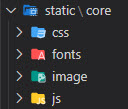

Creación de nuevo proyecto
Visual Studio Code Alt+Ñ para entrar a consola.
Navegar a carpeta donde quiero que quede el proyecto, en mi caso Mis Documentos.
→cd Documents
→pip install django (Si ya estaba instalado en la carpeta no es necesario).
→django-admin startproject myproject
→cd myproject (Para verificar la creación).
→Abrir carpeta en vscode, navegar y abrir nuevo proyecto creado.
→En el terminal de vscode debiera mostrar dirección del proyecto.
→python manage.py startapp core (donde 'core' es nuestra nueva app).
→En settings.py carpeta del projecto registramos nuestro modulo 'core'.
INSTALLED_APPS = [
'django.contrib.admin',
'django.contrib.auth',
'django.contrib.contenttypes',
'django.contrib.sessions',
'django.contrib.messages',
'django.contrib.staticfiles',
'core',
]
→python manage.py runserver
→Con esto activamos puerto del servidor y el proyecto debiera estar activo.
Versión de Django
python -m django --version
Cargar Templates HTML
→El orden de llamados en Django es: urls → view → template.
→'template' Dentro del modulo 'core' creamos dos carpetas templates/core.
→En esta nueva carpeta core cargamos todos los HTML.
→'view' dentro de nuestro modulo 'core' entramos a view y creamos nuestro view o controlador.
from django.shortcuts import render
def home(request):
return render(request, 'core/home.html')
→'urls' Dentro del modulo 'core' creamos un archivo urls.py este se hara cargamo
de todas las sub-urls.
from django.urls import path
from .views import home
urlpatterns = [
path('', home, name='home'),
]
→Para que nuestras sub-urls se visualicen, esta tenemos que registrar en la 'urls.py'
raiz de nuestro projecto con 'include'.
from django.contrib import admin
from django.urls import path, include
urlpatterns = [
path('admin/', admin.site.urls),
path('', include('core.urls')),
]
→Ejecutamos en comando para levantar el server, NOTA: en este caso aun no carga css-js-img
→python manage.py runserver
Agregar carpetas CSS-JS-IMAGE-VIDEO-FONT
→Dentro del modulo 'core' creamos dos carpetas static/core
es aquí donde agregamos todas nuestras carpetas.
→Para rediccionar los link de nuestro css-js creamos un tag dentro del html.
<title>JavaScripts Code</title>
{% load static %}
<link rel="shortcut icon" href="{% static 'core/image/codigo.svg' %}">
<link href="https://fonts.googleapis.com/css?family=Roboto+Condensed" rel="stylesheet">
<!--NavBar Responsive-->
<link href="{% static 'core/css/navbar.css' %}" rel="stylesheet">
